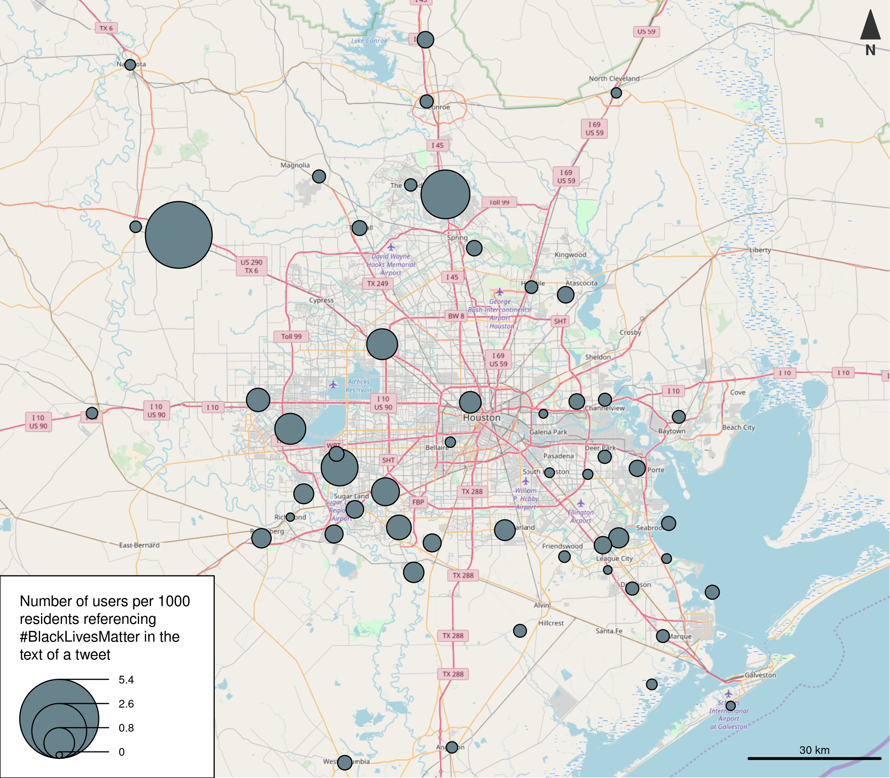
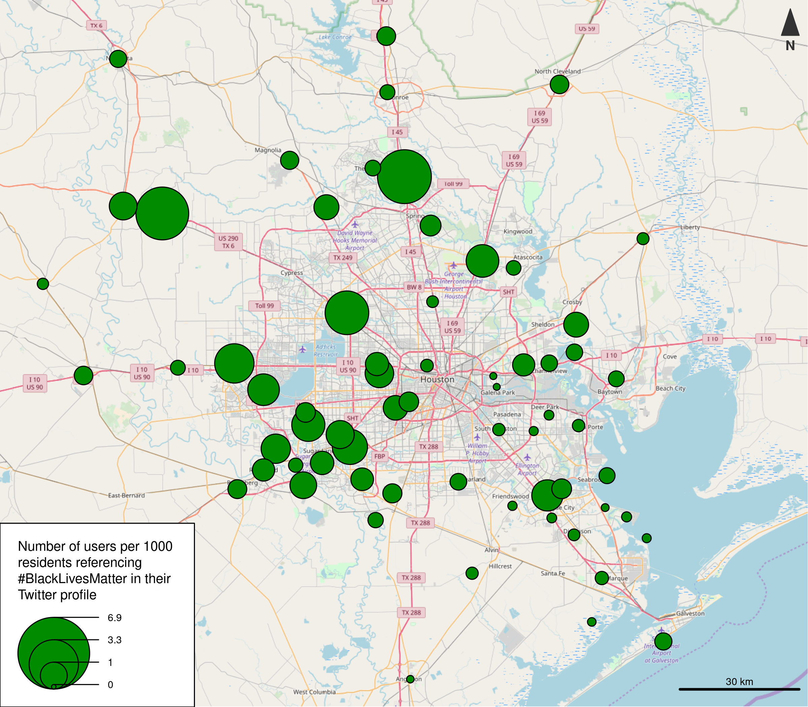
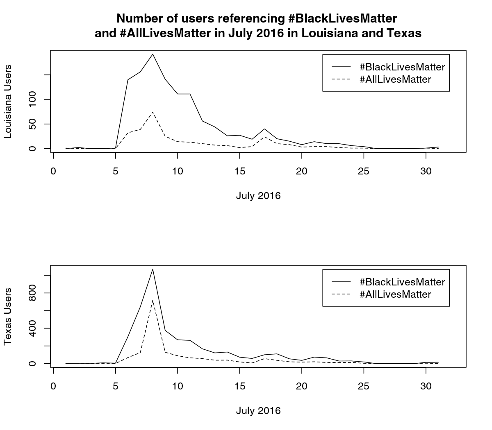

name: inverse layout: true class: center, middle, inverse --- #A place-based analysis of \#BlackLivesMatter and counter-protest content on Twitter Matthew Haffner Department of Geography and Anthropology University of Wisconsin - Eau Claire https://mhaffner.github.io .footnote[created with remark.js] --- layout: false .left-column[ ## Introduction ### - LBSM ] .right-column[ - The internet has become an integral part of social activism. - Location-based social media (LBSM) is now an important data source. - The #BlackLivesMatter movement has been studied extensively, but research on its spatial manifestation is lacking. ] --- .left-column[ ## Introduction ### - LBSM ### - Race ] .right-column[ - There is significant potential in using big spatial data to elicit patterns of inequality (Shelton et al. 2014). - Color-blind racism (Bonilla-Silva 2003). ] --- .left-column[ ## Introduction ### - LBSM ### - Race ## Research focus ### - Questions ] .right-column[ 1. Which demographic variables are best at predicting the production of \#BlackLivesMatter and \#AllLivesMatter Twitter content? 2. What are the characteristics of the outliers, and what can content in those places tell us about racial discourse? ] --- .left-column[ ## Introduction ### - LBSM ### - Race ## Research focus ### - Questions ### - Approach ] .right-column[ - "Abductive reasoning" (Miller 2010) - Counts of _users_ rather than _tweets_ - _General_ location rather than _precise_ location ```json "_source": { "geo": { "type": "Point", "coordinates": [ 39.5687, 2.6509 ] }, "coordinates": { "type": "Point", "coordinates": [ 2.6509, 39.5687 ] }, "place": { "id": "6c1be133511970bc", "url": "https://api.twitter.com/1.1/geo/id/6c1be133511970bc.json", * "place_type": "city", "name": "Palma de Maiorca", * "full_name": "Palma de Maiorca, Espanha", "country_code": "ES", "country": "Espanha" } } ``` ] --- .left-column[ ## Introduction ### - LBSM ### - Race ## Research focus ### - Questions ### - Approach ] .right-column[ - References within tweet text _and_ profile ```json "_source": { "created_at": "Sat Sep 03 11:57:06 +0000 2016", * "text": "#BlackLivesMatter", "user": { "location": "Washington, D.C.", * "description": "#BlackLivesMatter", "followers_count": 786, "friends_count": 638, "favourites_count": 4758, "statuses_count": 9052, "time_zone": "Madrid", "lang": "es" } } ``` ] --- .left-column[ ## Introduction ### - LBSM ### - Race ## Research focus ### - Questions ### - Approach ## Data & methods ] .right-column[ ### Correlation and regression ### Dependent variables - Dependent variables were derived from all geolocated tweets produced by users referencing \#BlackLivesMatter and/or #AllLivesMatter within incorporated and census designated places in Texas and Louisiana between October 2015 and November 2016 - BLMTWEPERCAP - BLMPROFPERCAP - ALMTWEPERCAP - ALMPROFPERCAP ] --- .left-column[ ## Introduction ### - LBSM ### - Race ## Research focus ### - Questions ### - Approach ## Data & methods ] .right-column[ ### Correlation and regression ### Indpendent variables - Percent black - Percent white - Percent Hispanic - Percent Asian - Percent multiracial - Population - Median age - Median family income - Percent unemployed - State (TX or LA) ] --- .left-column[ ## Introduction ### - LBSM ### - Race ## Research focus ### - Questions ### - Approach ## Data & methods ## Results ] .right-column[ ### Number of users by phrase and type | | In text | In profile | | ------------- | ------------- | ----- | | \#BlackLivesMatter | 6595 | 2702 | | \#AllLivesMatter | 2382 | 127 | ] --- .left-column[ ## Introduction ### - LBSM ### - Race ## Research focus ### - Questions ### - Approach ## Data & methods ## Results ] .right-column[  ] --- .left-column[ ## Introduction ### - LBSM ### - Race ## Research focus ### - Questions ### - Approach ## Data & methods ## Results ] .right-column[  ] --- .left-column[ ## Introduction ### - LBSM ### - Race ## Research focus ### - Questions ### - Approach ## Data & methods ## Results ] .right-column[ ### Correlation results | | BLM in text | ALM in text | BLM in profile | ALM in profile | |------------------|-------------|-------------|----------------|----------------| | Percent black | 0.35 | 0.20 | 0.36 | 0.16 | | Percent white | -0.30 | -0.17 | -0.30 | -0.15 | | Percent Hisp. | -0.26 | -0.13 | -0.29 | -0.06 | | Percent Asian | 0.35 | 0.33 | 0.37 | 0.35 | ] --- .left-column[ ## Introduction ### - LBSM ### - Race ## Research focus ### - Questions ### - Approach ## Data & methods ## Results ] .right-column[ ### Tweets mentioning both \#BlackLivesMatter and \#AllLivesMatter > [sic] \#AllLivesMatter, will be true once #BlackLivesMatter is included... <br> > \#BlackLivesMatter does not mean we Only matter of mean more or less than #AllLivesMatter or #BlueLivesMatter it means we Matter Too. ] --- .left-column[ ## Introduction ### - LBSM ### - Race ## Research focus ### - Questions ### - Approach ## Data & methods ## Results ] .right-column[ ### Tweets produced in Prairie View, Texas > \#PrayersforMizzou #BlackLivesMatter #PVAMU19... <br> > \#ConcernedStudent1950 #BlackLivesMatter #PVSandswithMizzou #PrayForMizzou... <br> > \#Dallas #BlackLivesMatter #propaganda #PrayForPeace... ] --- .left-column[ ## Introduction ### - LBSM ### - Race ## Research focus ### - Questions ### - Approach ## Data & methods ## Results ] .right-column[  ] --- .left-column[ ## Introduction ### - LBSM ### - Race ## Research focus ### - Questions ### - Approach ## Data & methods ## Results ## Conclusion ] .right-column[ ### Main findings - \#AllLivesMatter is not really used as a prominent counter protest narrative - LBSM enables new types of relationships ### Future directions - What drives a person to tag their location in the wake of a race-related event? - \#TCOT? (Ray et al. 2017) - Place-based sentiment analysis ] --- template: inverse Haffner, M. (2018). A place-based analysis of \#BlackLivesMatter and counter-protest content on Twitter. _GeoJournal_. 1-24.